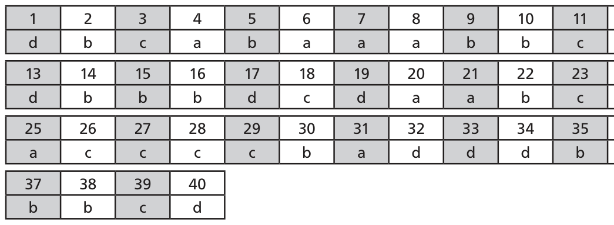
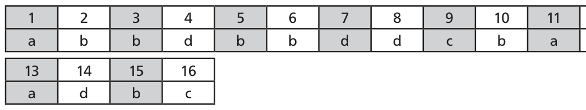
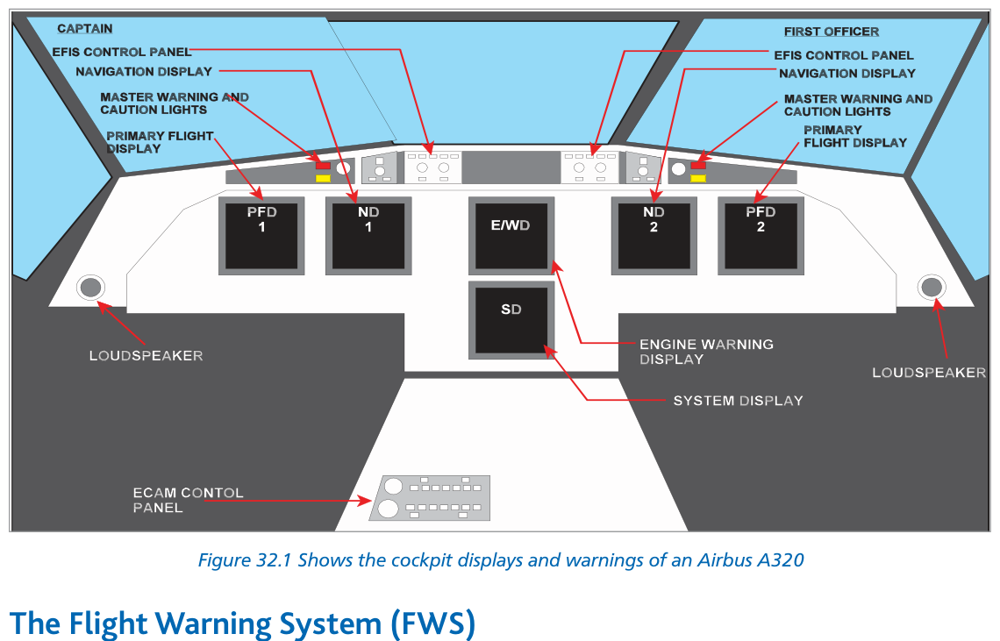

The Flight Warning System (FWS) produces cautions and warnings for the crew to increase situation awareness and indicate actions needed to avoid impending danger.
Modern aircraft have a large number of warning systems. Without prioritisation, multiple simultaneous warnings could overwhelm the crew. The FWS:
Prioritises warnings relevant to the current flight phase
Inhibits warnings not immediately relevant
Enables the crew to respond to the most immediate safety threat first
2. Levels of Alerts
Level
Name
Crew Action Required
Level A
Warnings
Immediate crew action
Level B
Cautions
Immediate crew alertness and subsequent crew action
Level C
Advisories
Crew alertness
3. Warnings in General — Visual, Aural, Sensory
Visual
Colour coding:
RED — Warnings (immediate action)
AMBER / YELLOW — Cautions (action before failure)
Any colour except red or green — Advisories (on EICAS panels: also amber)
Visual indications presented as:
Electronic Screens — coloured text/symbols on flight, navigation, engine and system displays
Lights or Flags — Red lights/flags = warning; Amber lights/flags = approaching a limit
Master warning (red) and caution (amber) lights are provided near the centre of scan in front of each pilot.

Fig 32.1 — Cockpit displays and warnings of an Airbus A320 (source p.431)

Fig 32.2 — Warning and alerting system (Boeing 767) (source p.431)
Aural
Audible warning is mandatory if the pilot is required to assume control. Priority order for multiple alerts:
Vibratory mode on controls (stick shaker) indicates stall approach and demands immediate action. A stick-pusher may be fitted on T-tail aircraft to prevent deep stall entry.
5. The Flight Warning System (FWS)
The FWS generates alerts and warnings for three categories:
Category
Examples
Engine and airframe system malfunctions
Engine fire, hydraulic failure, pressurisation loss
Inputs: Hundreds of engine and airframe sensors, air data sensors, GPWS and ACAS systems. Processing unit: One or two Flight Warning Computers. Outputs: Alerts (amber lights/text, chimes) and Warnings (red lights/text, sirens/bells).

Fig 32.3 — FWS block diagram — Boeing 767 warning and alert system (source p.436)
Glare-shield master warning (red) and master caution (amber) lights act as attention-getters. In older systems: Centralised Warning Panel (CWP). In EFIS: alerts on electronic screens with aural messages.
Quick Revision Summary — Chapter 32:
FWS purpose: prioritise and present warnings/cautions/advisories to crew
Level A = Warning (red, immediate action); Level B = Caution (amber, crew alertness + action); Level C = Advisory
Colour: Red = warnings; Amber/Yellow = cautions; other = advisories
Aural priority: Stall → Windshear → GPWS → ACAS
Boeing: bell (fire), siren (cabin/config/overspeed), wailer (AP disconnect), synth voice (GPWS/WS/ACAS)
Explanation: The standard synthetic voice aural warning priority is: Stall → Windshear → GPWS → ACAS. Stall is inhibited during stick push, windshear takes first active priority, then terrain, then collision. See Section 4.
Why other options are wrong:
(a), (b), (d) All incorrect ordering. Stall is always highest priority; ACAS is lowest of the four.
Q2.On a Boeing aircraft, an autopilot disconnect is accompanied by:
A bell
A siren
A wailer
Continuous repetitive chimes
Correct Answer: (c) A wailer
Explanation: Boeing: wailer = autopilot disconnect. Bell = fire; Siren = cabin altitude, config, overspeed. Continuous repetitive chimes = Airbus red warning. See Section 4.
Why other options are wrong:
(a) Bell = fire on Boeing.
(b) Siren = cabin altitude/config/overspeed on Boeing.
(d) Continuous repetitive chimes = Airbus red warning, not Boeing AP disconnect.
Instructor's Note: On Airbus, AP disconnect = cavalry charge. Important to distinguish Boeing vs Airbus aural warnings.
Q3.A Level B alert from the flight warning system requires:
Immediate crew action
Immediate crew alertness and subsequent crew action
Crew alertness only
Automatic system shutdown
Correct Answer: (b) Immediate crew alertness and subsequent crew action
Explanation: Level A = Warning = immediate action. Level B = Caution = immediate alertness + subsequent action. Level C = Advisory = alertness only. See Section 2.
Why other options are wrong:
(a) Immediate action = Level A (Warning), not Level B.
(c) Alertness only = Level C (Advisory).
(d) Automatic shutdown is not a warning system response category.
Instructor's Note: Think of it as urgency levels: Level A = drop everything now; Level B = look up and plan action; Level C = note and monitor.
Q4.Advisories (Level C alerts) are displayed in which colour?
Red
Green
Amber or yellow only
Any colour except red or green
Correct Answer: (d) Any colour except red or green
Explanation: Advisories can be displayed in any colour except red (reserved for warnings) or green (reserved for normal status). On EICAS panels, advisories are also amber. See Section 3.
Why other options are wrong:
(a) Red = warnings only.
(b) Green = normal/operational status.
(c) Amber/yellow = cautions; advisories have a broader colour range.
Instructor's Note: The rule for advisories is defined by exclusion: not red, not green. In practice most advisories are amber too, but the regulation allows other colours.
Q5.The stall warning on a fly-by-wire (Airbus) aircraft consists of:
A bell and red master WARNING light
Stick shaker and aural warning
Cricket sound, synthetic voice STALL, and red master WARNING light
Siren and amber master CAUTION light
Correct Answer: (c) Cricket sound, synthetic voice STALL, and red master WARNING light
Explanation: On FBW (Airbus) aircraft: stall warning = cricket sound + synthetic voice "STALL" + red master WARNING light. There is no mechanical stick shaker — the FBW system handles control protection directly. See Section 4.
Why other options are wrong:
(a) Bell = fire (Boeing); not stall.
(b) Stick shaker is conventional (non-FBW) aircraft stall warning.
(d) Siren = overspeed/cabin alt; amber caution is not used for stall (which is a red warning).
Instructor's Note: FBW stall protection goes beyond warning — the flight computer limits the AoA. The cricket + synth voice is the last "advisory" before the computer intervenes. It's a Warning (red), not just a caution.
Q6.The Flight Warning System inhibits some warnings in certain flight phases in order to:
Reduce avionics power consumption
Allow the crew to focus on the most immediate threat to safety
Comply with noise abatement procedures
Prevent automatic engagement of the autopilot
Correct Answer: (b) Allow the crew to focus on the most immediate threat to safety
Explanation: The FWS prioritises warnings and inhibits those not immediately relevant so the crew can respond to the most critical threat. Multiple simultaneous warnings could confuse the crew and cause them to miss the most urgent one. See Section 1.
Why other options are wrong:
(a), (c), (d) Power consumption, noise, and autopilot engagement are unrelated to why FWS inhibits warnings.
Instructor's Note: This is the core philosophy of an integrated FWS vs individual standalone warning systems. Integration → prioritisation → reduced workload → better safety outcomes.